Obra
vallescondido el parque
Residencia
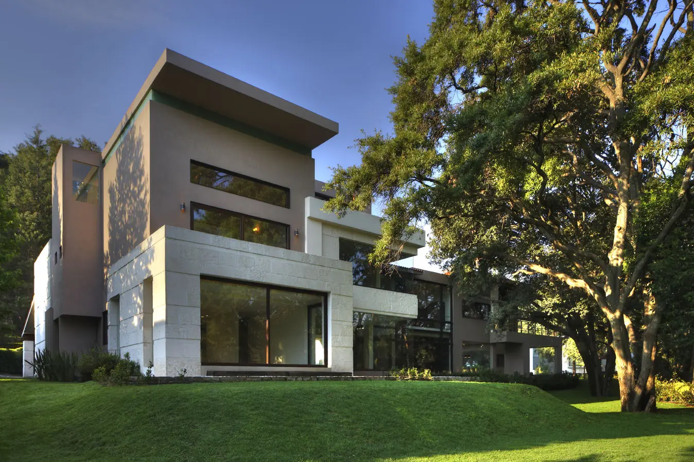
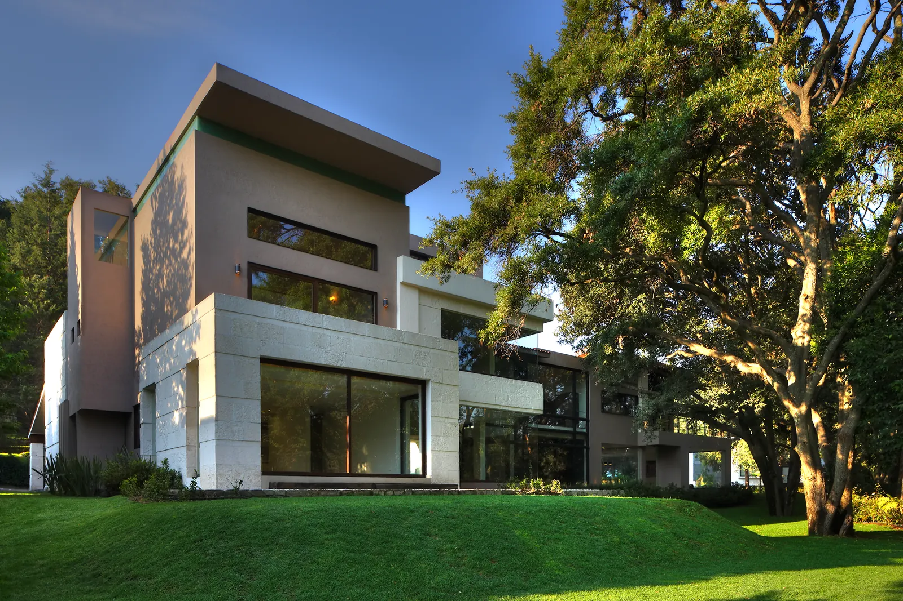
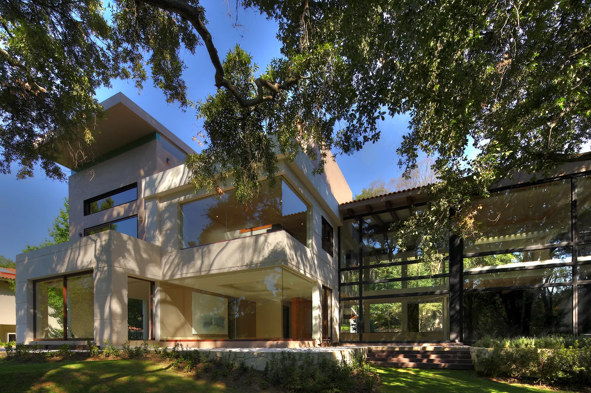

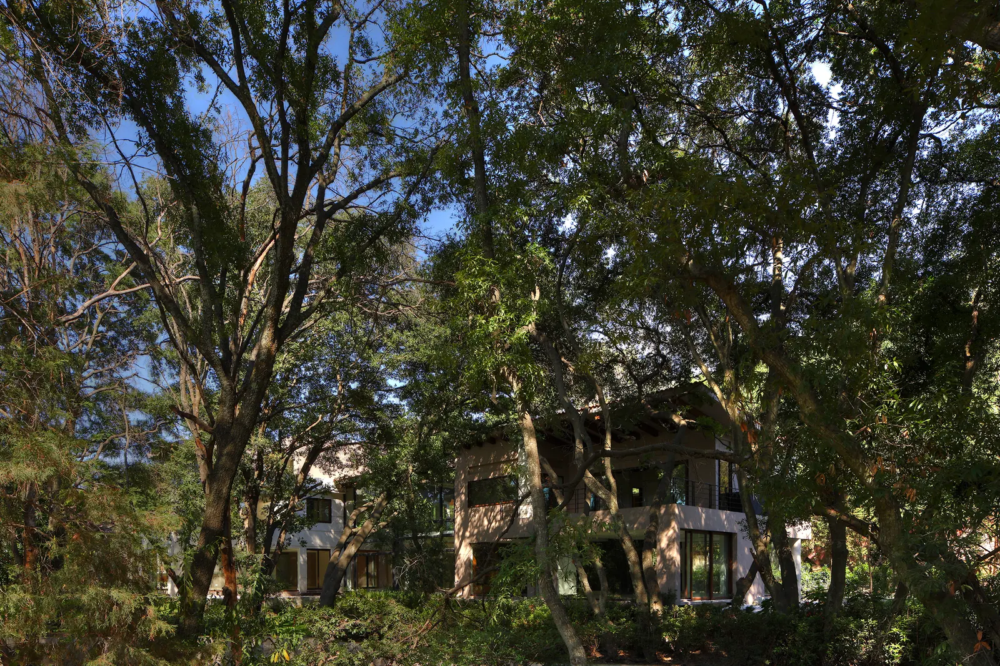

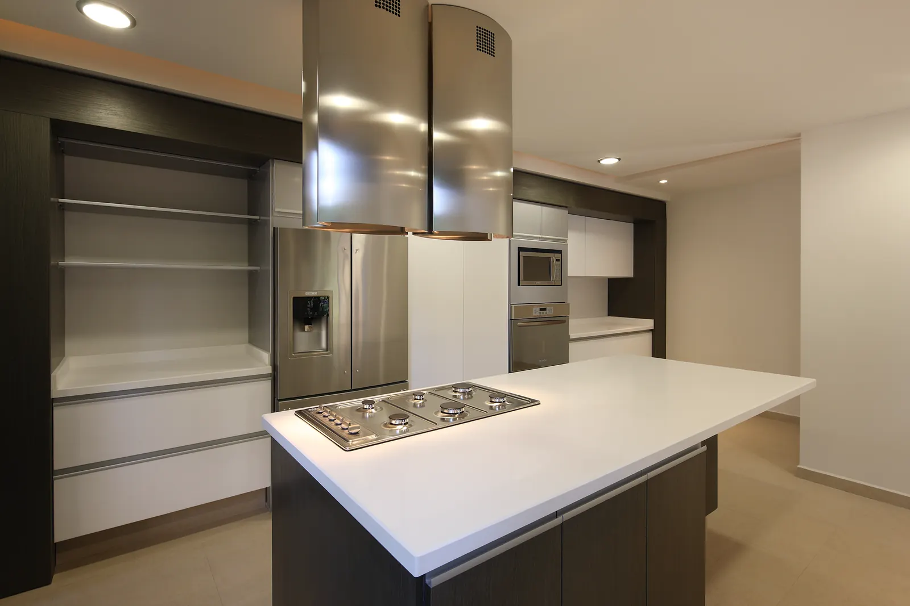

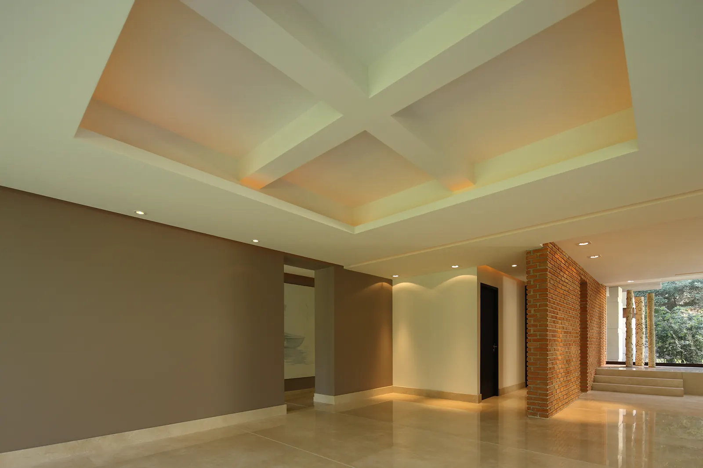
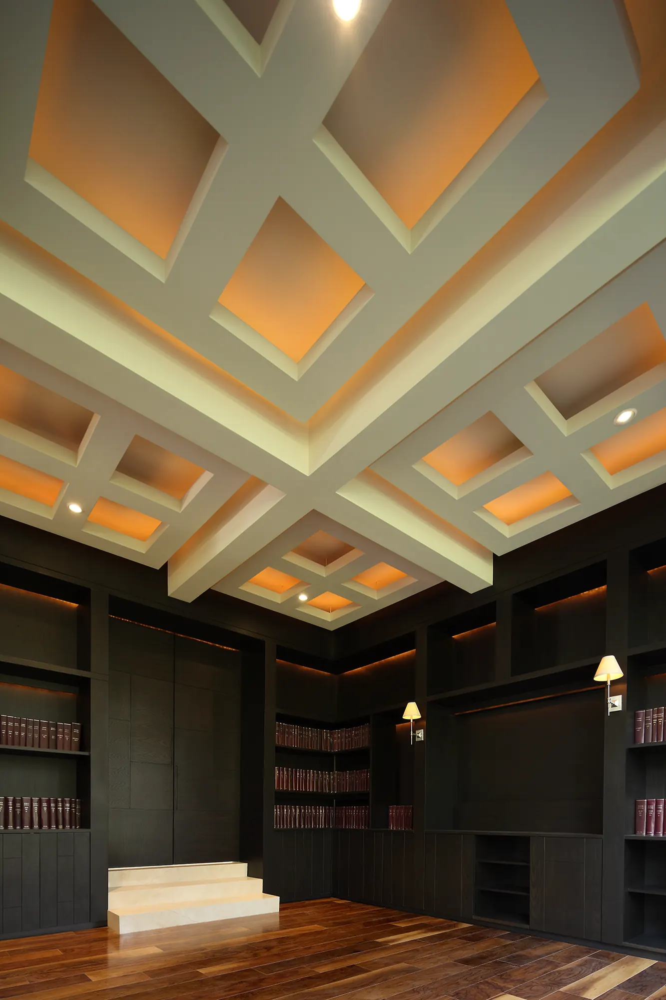
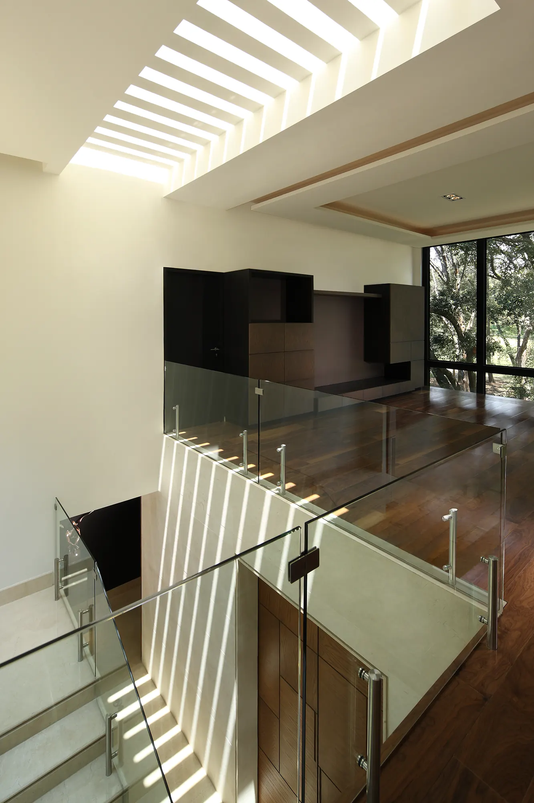


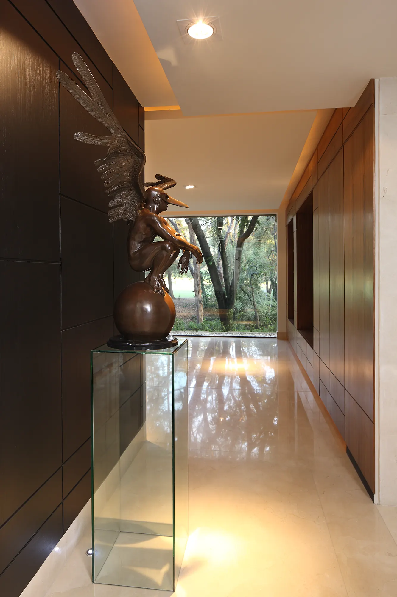
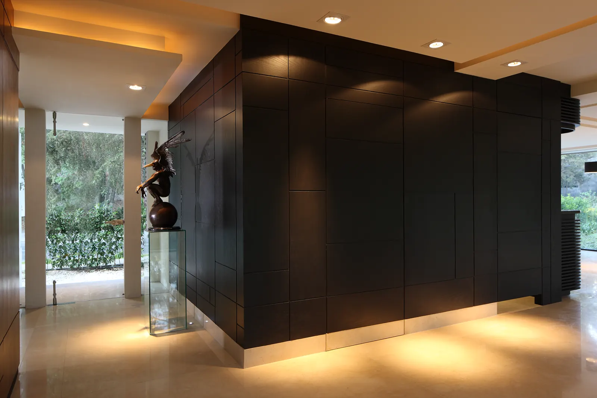
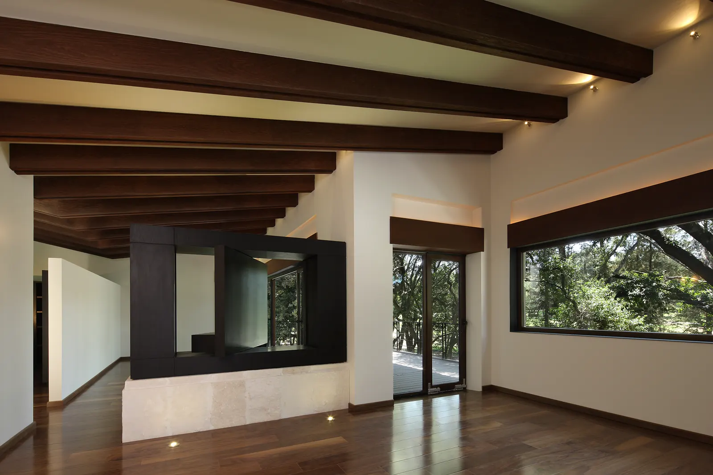


La mañana entra primero por donde la familia desayuna. No es casualidad: cada espacio se orientó según la hora en que se vive. Aquí las puertas se abren a lo verde y la casa se comporta como un lugar de paso hacia afuera.
Siguiente obra
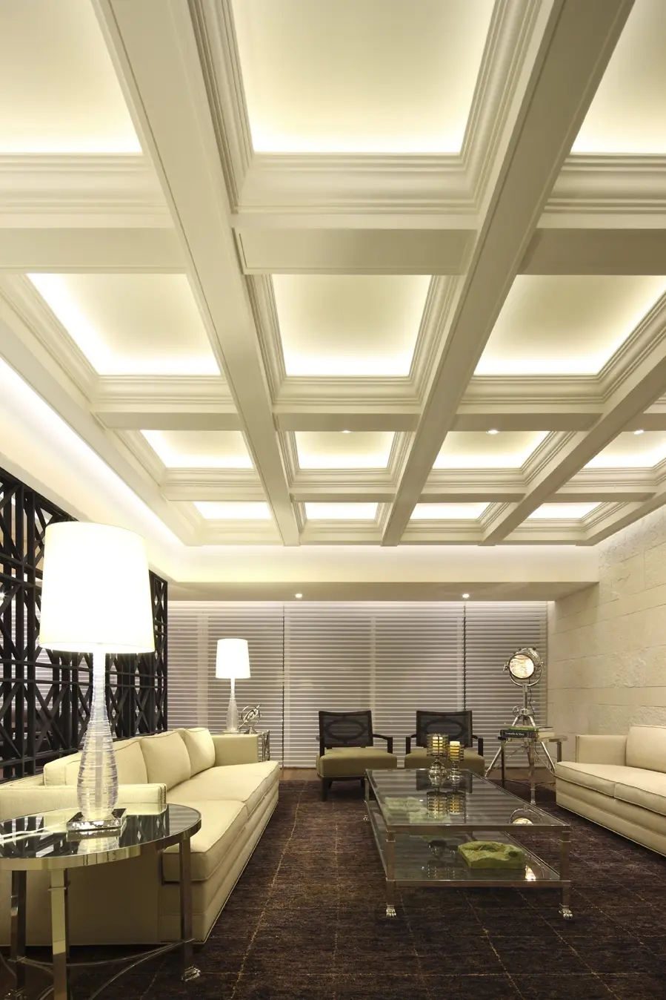
siguiente obra: ph club de golf bosques ver la obraasí puede empezar la tuya
Cada obra de este archivo empezó con una conversación sobre una forma de vivir. La siguiente conversación puede ser la tuya.
Empieza tu casa